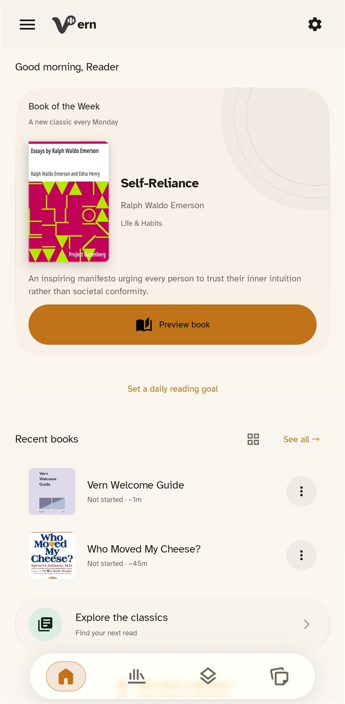
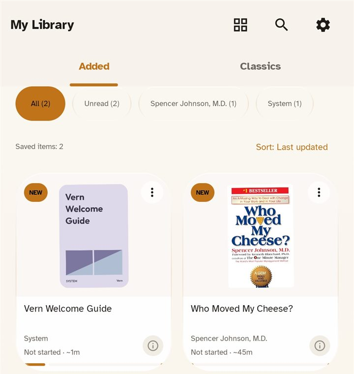
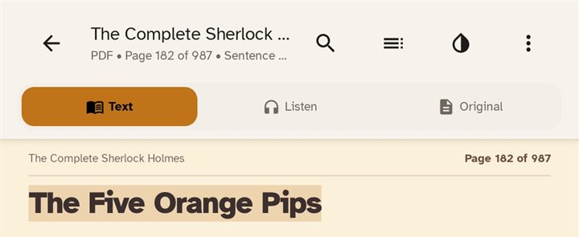
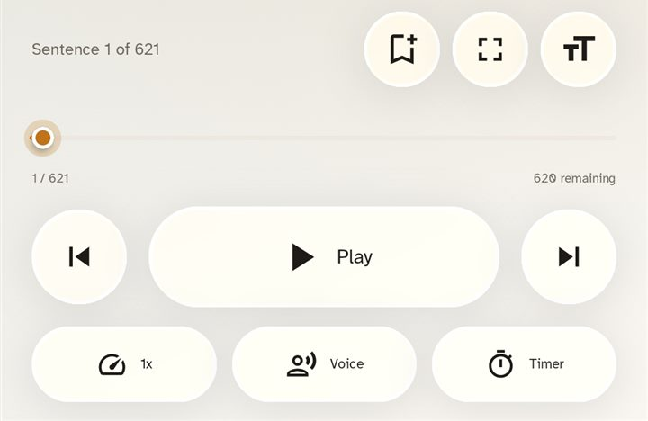
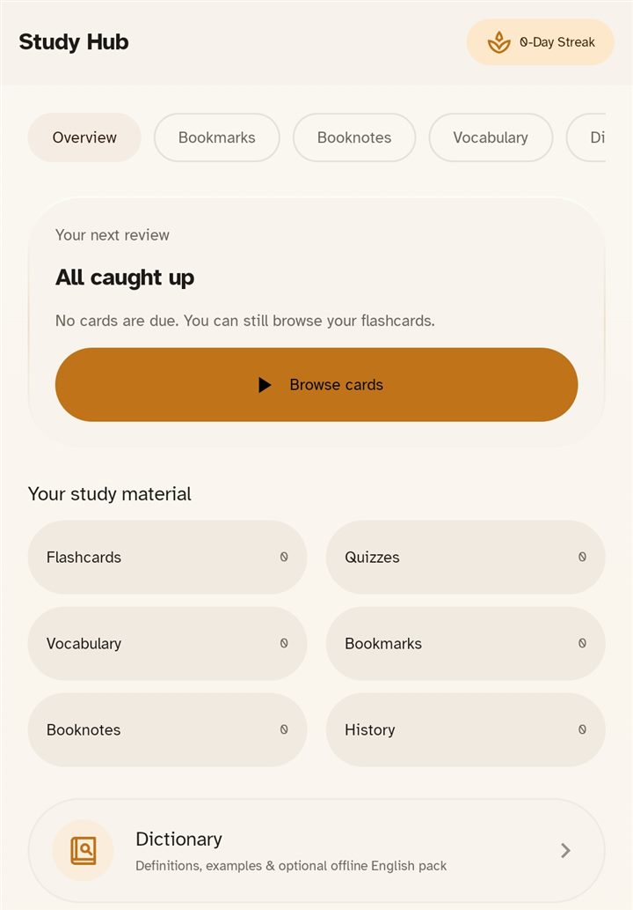

Read, listen,
and study.
Vern turns PDFs, EPUBs, Word documents, and web articles into a personal Android library you can read, hear, and study at your own pace.

From your shelf to your notes.
Organize your books in Collections, listen with downloadable offline voices, and revisit what you read in Study Hub.




Find your next classic.
Browse public-domain books in the built-in Classics catalog, from Jane Austen to Marcus Aurelius. Download an edition and keep it in your library for offline reading.


Get Vern for Android.
Vern runs on Android 9 and later.
Switching between Google Play and the APK?
Export a backup first. Switching distribution channels may require reinstalling the app. Contact support before uninstalling if Android rejects the update.
Before you start.
Can I use Vern offline?
Read imported books and listen with installed offline voices. Web imports and optional online providers need a connection.
Where does Vern store my library?
Your library and reading history stay on your device. Optional AI, translation, and web tools send selected content to the provider you choose. Read the privacy policy.
Can I read the original PDF layout?
Yes. Use Original PDF View for the original pages or switch to extracted text for adjustable typography and narration.